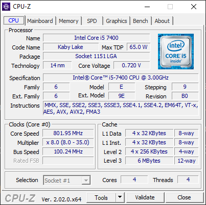
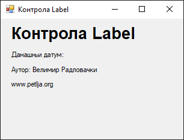
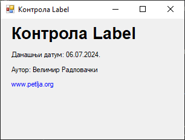
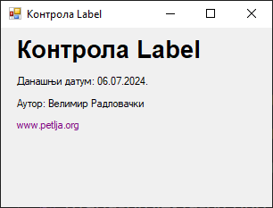
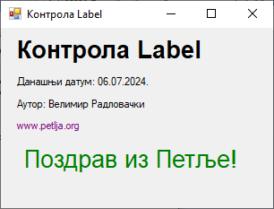

Лабела¶
Контрола лабела (енгл. label), у литератури на српском језику често
названа и ознака, дефинисана је у класи Label у именском простору
System.Windows.Forms, односно склопу System.Windows.Forms.dll. Класа
Label наслеђује класу Control, па због тога лабеле имају основна својства,
догађаје и методе као и остале контроле у Windows Forms App пројектима.
Детаљан опис својстава, догађаја и метода класе Label налази се у званичној
документацији.
Има их много и нема потребе наводити их све на овом месту. Својствима лабеле
можеш детаљно дефинисати изглед лабеле и положај лабеле на форми. Лабеле
учествују у редоследу картица (енгл. TAB order) у којем добијају свој индекс
(TabIndex), али не примају фокус (TabStop). Неке од основних својстава које
ћеш често користити су:
Text. Одређује текст у контроли.TextAlign. Одређује поравнање текста унутар контроле.Font. Одређује својства фонта текста.ForeColorиBackColor. Одређује боју текста и боју позадине текста.
Иако се контрола лабела чешће користи за приказ статичног текста, корисни су
догађаји клика мишем Click и остали догађаји миша, што ће бити демонстрирано
у задатку који следи.
Ти ћеш обично користити лабеле за приказ текста кориснику на форми или за приказ описног текста за неку другу контролу. На пример, у следећој апликацији…

…лабелама су описани садржаји оквира за текст (Name, Code Name, Max TDP, Package…), садржај комбинованог оквира за текст (Selection) и у дну апликације, у лабели је приказан текст о тренутној верзији апликације (Ver. 2.02.0.x64).
У истој апликацији, на овој картици…

…у лабелама су приказане информације о верзији и аутору апликације, потом су
лабелама реализовани хиперлинкови (www.cpuid.com, CPUID Software...,
CPU-Z Validator) и на крају су у лабелама приказане информације о оперативном
систему корисника.
Контролу лабела можеш поставити, односно приказати на форми на два начина:
помоћу дизајнера у току израде апликације (енгл. Design-Time) или
мануелно програмским кодом у току извршавања апликације (енгл. Run-Time).
Како је ово прва контрола о којој учиш, креираћеш једноставну GUI апликацију у којој ћеш користити само лабела контроле и једну форму. Нека је задатак да се креира Windows Forms Apps (.NET Framework) пројекат са једном формом димензија 320×240. На форму треба да поставиш:
лабелу са текстом Контрола Label, задебљаним (
Bold) фонтомArialвеличине20,лабелу са текстом Данашњи датум:, где треба дописати и данашњи датум,
лабелу са текстом Аутор: Име Презиме, где Име Презиме треба да замениш својим именом и презименом,
лабелу са текстом
www.petlja.orgкоји се понаша као хиперлинк - исписан је плавом бојом, ако се преко њега пређе мишем текст постаје љубичаст и мења се показивач миша из стрелице у руку, а ако се на њега кликне, испод се појављује пета лабела,текст пете лабеле Поздрав из Петље! треба да буде исписан задебљаним (
Bold) фонтомArial, величине20, зелене боје.
Када постављаш лабеле помоћу дизајнера, подразумевана имена лабела label1,
label2, label3 итд., треба да промениш у нека смислена имена, на пример,
lblNaslov, lblDatum, lblAutor итд. Променом подразумеваних имена лабела
сваком ће бити јасно о којој је лабели реч. Ако не промениш подразумевана
имена, након одређеног времена ни ти се нећеш сећати које име припада којој
лабели, нарочито ако их ниси постављао редом.
Постави све лабеле осим последње, онако како је тражено у задатку. Својства
прве лабеле можеш најбрже променити у Properties прозору:
својство
Textпостави наКонтрола Label,својство
Font,Nameпостави наArial,својство
Font,Sizeпостави на20исвојство
Font,Boldпостави наTrue.
Форма са постављене четири лабеле сада треба да изгледа овако:

Текст у другој лабели треба да прошириш са данашњим датумом. Како датум треба
да буде видљив приликом приказа форме, исто као и боја четврте лабеле, кликни
на форму па дефиниши догађај Load на следећи начин:
private void Form1_Load(object sender, EventArgs e)
{
lblDatum.Text = "Данашњи датум: " + DateTime.Now.ToString("dd.MM.yyyy.");
lblSajt.ForeColor = Color.Blue;
}
Сада ће се приликом приказа форме приказати и данашњи датум, а боја текста четврте лабеле биће плава:

Следеће, треба да промениш боју текста четврте лабеле и показивач миша када се
преко ње пређе мишем. Значи, када се показивач миша нађе изнад четврте лабеле,
боја четврте лабеле треба да постане љубичаста и показивач миша добије облик
руке (Hand), односно, када се показивач миша склони са четврте лабеле, њена
боја треба да се врати на плаву, а показивач миша добије подразумевани облик.
Да би имплементирао ову функционалност потребно је да дефинишеш догађај
преласка миша преко четврте лабеле MouseHover…
private void lblSajt_MouseHover(object sender, EventArgs e)
{
lblSajt.ForeColor = Color.Purple;
lblSajt.Cursor = Cursors.Hand;
}
…и догађај склањања показивача миша са четврте лабеле MouseLeave:
private void lblSajt_MouseLeave(object sender, EventArgs e)
{
lblSajt.ForeColor = Color.Blue;
lblSajt.Cursor = Cursors.Default;
}
Сада, када пређеш мишем преко четврте лабела, текст лабеле постаће љубичаст, а показивач миша претвориће се из подразумеване стрелице у руку, односно, када склониш миша са четвте лабеле, текст лабеле ће опет постати плав, а показивач миша вратиће се на подразумевани:

На крају, треба да дефинишеш догађај клика миша на четврту лабелу. Када се
кликне мишем на четврту лабелу, потребно је да се појави пета лабела са текстом
Поздрав из Петље! која има својства дефинисана у задатку.
Креирај пету лабелу у дизајнеру са свим траженим својствима и сакриј је тј.
својство Visible пете лабеле постави на False. Дефиниши догађај Click на
четврту лабелу у којем ћеш својство Visible поставити на True.
private void lblSajt_Click(object sender, EventArgs e)
{
lblPozdrav.Visible = True;
}
Сада, када кликнеш на четврту лабелу, приказаће се пета лабела, онако како је тражено у тексту задатка:
